XRDdyn
The XRDdyn class simulates dynamical X-ray diffraction on a 1D structure.
Copyright (c) 2013, Daniel Schick, André Bojahr, Marc Herzog, Roman Shayduk, Clemens von Korff Schmising All rights reserved.
License: BSD (use/copy/change/redistribute on own risk, mention the authors)
Contents
- Classdef
- Properties
- Methods
- Constructor
- Display
- getHash
- Homogenous sample structures
- homogeneousReflectivity
- homogeneousRefTransMatrix
- Inhomogenous Sample Structure
- getInhomogeneousReflectivity
- parallelInhomogeneousReflectivity
- sequentialInhomogeneousReflectivity
- distributedInhomogeneousReflectivity
- calcInhomogeneousReflectivity
- getAllRefTransMatrices
- calcAllRefTransMatrices
- unit cell methods
- getUCRefTransMatrix
- atomic methods
- getAtomRefTransMatrix
- getReflectionFactor
- getTransmissionFactor
- getAtomPhaseMatrix
- getAtomPhaseFactor
- getReflectivityFromMatrix
- References
Classdef
Each XRDdyn instance and all inherited class objects are inherted from the XRD class which follows handle semantics. Hence a copy of such object will not copy the object itself, but only a handle to that object.
classdef XRDdyn < XRD
Properties
properties (SetAccess=public,GetAccess=public)
lastAtomRefTransMatrices = {}; % CELL ARRAY containing atom ID, hash of [E qz area pol dbf]
% and RefTransMatrix for this atom and set of parameters
end%properties
Methods
methods
Constructor
Is executed each time an instance of this class is created. Only the structure input is obligatory.
function obj = XRDdyn(structure,varargin) obj = obj@XRD(structure,varargin{:}); end%functions
Display
This method is called to display informations of the instance.
function disp(obj) disp('Dynamical X-Ray Diffraction simulation properties:'); % call the parent display method disp@XRD(obj); end%function
getHash
Returns a unique hash given by the energy 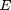, 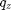 range, polarization factor and the strain vectors as well as the sample structure hash.
function hash = getHash(obj,strainVectors,strainMap) % dataHash is an external function if nargin == 2 hash = [obj.S.getHash('XRD') '_' dataHash({obj.E obj.qz obj.pol strainVectors})]; else % reduce size of strainMap when it has more than 1e6 elements if numel(strainMap) > 1e6 strainMap = reshape(strainMap,1,numel(strainMap)); strainMap = strainMap(1:1e6); end hash = [obj.S.getHash('XRD') '_' dataHash({obj.E obj.qz obj.pol strainVectors strainMap})]; end end%functions
Homogenous sample structures
Each of the sample sublayers are homogeneously strained. Thus one can speed up the calculations of the rocking curves.
homogeneousReflectivity
Returns the reflectivity 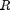 of the whole sample structure and the reflectivity-transmission matrices 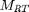 for each substructure. The reflectivity of the 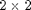 matrices for each is calculates as follow:
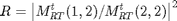
function [R A] = homogeneousReflectivity(obj,strains) % if no strains are given we assume no strain if nargin < 2 strains = zeros(obj.S.getNumberOfSubStructures(),1); end tic obj.dispMessage('Calculating _homogenousReflectivity_ ...'); % get the reflectivity-transmisson matrix of the structure [RT A]= obj.homogeneousRefTransMatrix(obj.S,strains); % calculate the real reflectivity from the RT matrix R = obj.getReflectivityFromMatrix(RT)'; obj.dispMessage('Elapsed time for _homogenousReflectivity_:',toc); end%functions
homogeneousRefTransMatrix
Returns the reflectivity-transmission matrices of the whole sample structure as well as for each sub structure. The reflectivity-transmission matrix of a single unit cell is calculated from the reflection-transmission matrices  of each atom and the phase matrices between the atoms 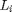:
of each atom and the phase matrices between the atoms 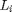:
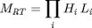
For 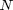 similar layers of unit cells one can calculate the N-th power of the unit cell 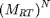. The reflection-transmission matrix for the whole sample 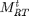 consisting of 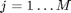 substructures is then again:
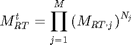
function [RT A] = homogeneousRefTransMatrix(obj,S,strains) % if no strains are given we assume no strain (1) if nargin < 3 strains = zeros(S.getNumberOfSubStructures(),1); end % initialize N = length(obj.qz); RT = repmat(eye(2,2),[1 1 N]); % RefTransMatrix A = cell(0,2); % cell Matrix of refTransMatrices of substructures strainCounter = 1; % traverse substructures for i = 1:size(S.substructures,1) if isa(S.substructures{i,1},'unitCell') % the substructure is an unitCell % calculate the ref-trans matrices for N unitCells temp = exponentTo3DMatrix(obj.getUCRefTransMatrix(S.substructures{i,1},strains(strainCounter)),S.substructures{i,2}); strainCounter = strainCounter+1; % remember the result A(end+1,1:2) = {temp, sprintf('%dx %s', S.substructures{i,2}, S.substructures{i,1}.name)}; else % its a structure % make a recursive call [temp temp2] = obj.homogeneousRefTransMatrix(S.substructures{i,1},strains(strainCounter:strainCounter+S.substructures{i,1}.getNumberOfSubStructures()-1)); A(end+1,1:2) = {temp2, [S.substructures{i,1}.name ' substructures']}; strainCounter = strainCounter+S.substructures{i,1}.getNumberOfSubStructures(); A(end+1,1:2) = {temp, sprintf('%dx %s', 1, S.substructures{i,1}.name)}; % calculate the ref-trans matrices for N sub structures temp = exponentTo3DMatrix(temp, S.substructures{i,2}); A(end+1,1:2) = {temp, sprintf('%dx %s', S.substructures{i,2}, S.substructures{i,1}.name)}; end%if % multiply it to the output RT = mtimesx(RT,temp); end%for % if a substrate is included add it at the end if ~isempty(S.substrate) [temp temp2] = obj.homogeneousRefTransMatrix(S.substrate); A(end+1,1:2) = {temp2, 'static substrate'}; RT = mtimesx(RT,temp); end%if end%functions
Inhomogenous Sample Structure
All unit cells in the sample are inhomogeneously strained. This is generally the case when calculating the transient rocking curves for coherent phonon dynamics in the sample structure.
getInhomogeneousReflectivity
Returns the reflectivity of an inhomogenously strained sample structure for a given strainMap in position and time, as well as for a given set of possible strains for each unit cell in the sample structure (strainVectors). If no reflectivity is saved in the cache it is caluclated. Providing the type (parallel [default], sequential, distributed) for the calculation the corresponding subroutines for the reflectivity computation are called:
- parallel parallelization over the time steps utilizing MATLAB's Parallel Computing Toolbox
- distributed parallelization over the time steps utilizing MATLAB's Distribted Computing Toolbox
- sequential no parallelization at all
function R = getInhomogeneousReflectivity(obj,strainMap,strainVectors,varargin) % create a hash of all simulation parameters filename = ['inhomogeneousReflectivityDyn_' obj.getHash(strainVectors,strainMap) '.mat']; fullfilename = fullfile(obj.cacheDir, filename); % check if we find some corresponding data in the cache dir if exist(fullfilename,'file') && ~obj.forceRecalc % found something so load it load(fullfilename); obj.dispMessage(['_inhomogeneousReflectivity_ loaded from file ' fullfilename]); else tic obj.dispMessage('Calculating _inhomogenousReflectivity_ ...'); % parse the input arguments p = inputParser; p.KeepUnmatched = true; p.addRequired('strainMap' , @isnumeric); p.addRequired('strainVectors' , @iscell); p.addOptional('type', 'parallel', @(x)(ischar(x) & find(strcmp(x,{'parallel', 'sequential', 'distributed'})))); p.addOptional('job' , ''); p.addOptional('numWorker', 1 , @isnumeric); p.parse(strainMap,strainVectors,varargin{:}); % assign parser results to object properties type = p.Results.type; strainMap = p.Results.strainMap; strainVectors = p.Results.strainVectors; job = p.Results.job; numWorker = p.Results.numWorker; % All ref-trans matrices for all unique unitCells and for all % possible strains, given by strainVectors, are calculated in % advance. RTM = obj.getAllRefTransMatrices(strainVectors); % select the type of computation switch type case 'parallel' R = parallelInhomogeneousReflectivity(obj,strainMap,strainVectors,RTM); case 'distributed' R = distributedInhomogeneousReflectivity(obj,strainMap,strainVectors,RTM,job,numWorker); otherwise % sequential R = sequentialInhomogeneousReflectivity(obj,strainMap,strainVectors,RTM); end%switch obj.dispMessage('Elapsed time for _inhomogeneousReflectivity_:',toc); save(fullfilename, 'R'); obj.dispMessage(['_inhomogeneousReflectivity_ saved to file ' fullfilename]); end%if end%function
parallelInhomogeneousReflectivity
Returns the reflectivity of an inhomogenously strained sample structure for a given strainMap in position and time, as well as for a given set of possible strains for each unit cell in the sample structure (strainVectors). The function tries to parallize the calculation over the time steps (parallel = true, since the results do not depent on each other. The routine checks whether the MATLAB pool is open - if not it opens the matlab pool with the default configuration.
function R = parallelInhomogeneousReflectivity(obj,strainMap,strainVectors,RTM) %initialize N = size(strainMap,1); % time steps R = zeros(N,length(obj.qz)); if verLessThan('matlab', '8.5') % this is everything before MATLAB 2015a s = matlabpool('size'); % get the size of the matlabpool if s == 0 % no matlabpool open obj.dispMessage(['No matlab pool was opened in advance, so lets do it now with the default configuration!']); matlabpool open; end%if else % this is for everthing starting with MATLAB 2015a if isempty(gcp('nocreate')) %s == 0 % no matlabpool open obj.dispMessage(['No matlab pool was opened in advance, so lets do it now with the default configuration!']); parpool; end%if end%if % check for path of ParforProgMon class to add it to % javapath p = fileparts(which('ParforProgMon.m')); str = ['javaaddpath ' p]; feval(@pctRunOnAll,str); % make progresspar with the external parforProgressMonitor % package ppm = ParforProgMon('Please wait... ',N); parfor i = 1:N ppm.increment(); % get the inhomogenous reflectivity of the sample % structure for each time step of the strain map R(i,:) = obj.calcInhomogeneousReflectivity(strainMap(i,:),strainVectors,RTM); end%parfor end%function
sequentialInhomogeneousReflectivity
Returns the reflectivity of an inhomogenously strained sample structure for a given strainMap in position and time, as well as for a given set of possible strains for each unit cell in the sample structure (strainVectors). The function calculates the results sequentially without parallelization.
function R = sequentialInhomogeneousReflectivity(obj,strainMap,strainVectors,RTM) %initialize N = size(strainMap,1); % time steps R = zeros(N,length(obj.qz)); obj.progressBar('Please wait... '); % open a progress bar for i = 1:N % get the inhomogenous reflectivity of the sample % structure for each time step of the strain map R(i,:) = obj.calcInhomogeneousReflectivity(strainMap(i,:),strainVectors,RTM); % print the progress to console obj.progressBar(i/N*100); end%for obj.progressBar(''); end%function
distributedInhomogeneousReflectivity
Return the reflectivity of an inhomogenous sample structure for a given strainMap in position and time, as well as for a given set of possible strains for each unit cell in the sample structure (strainVectors). This method is distributed over several workers using the MATLAB dist. computing toolbox. It requires a Job handle and the number of workers that should contribute.
function R = distributedInhomogeneousReflectivity(obj,Job,numWorker,strainMap,strainVectors) % initialize N = size(strainMap,1); taskSize = floor(N/numWorker); rest = mod(N,numWorker); numTasks = 0; % traverse all tasks for i = 1:taskSize:(taskSize*numWorker) % create a task for each part of the strain pattern createTask(Job, @obj.getInhomogeneousReflectivity, 1, {strainMap(i:(i+taskSize-1),:) strainVectors 'sequential'}); numTasks = numTasks+1; end%for % if there are parts left in the strain pattern, we have to % distribute them no at the end if rest > 0 for i = taskSize*numWorker:taskSize:(taskSize*numWorker+rest) if i+taskSize > N i_end = N; else i_end = i+taskSize; end%if % create a task for each part of the left strain pattern createTask(Job, @obj.parallelInhomogeneousReflectivity, 1, {strainMap(i+1:i_end,:) strainVectors 0}); numTasks = numTasks+1; end%for end%if %Run the job. submit(Job); obj.dispMessage('Job submitted. Waiting for tasks ...'); % plot the list of tasks get(Job, 'Tasks') % Wait for the job to finish running tasks, and retrieve the job results. obj.progressBar('Please wait... '); while ~waitForState(Job,'finished',1) [~, ~, finished] = findTask(Job); obj.progressBar(length(finished)/numTasks*100); end%while obj.progressBar(''); % get the results out = getAllOutputArguments(Job); % build the output reflectifity from the distributed results R = zeros(N,length(obj.qz)); m = 1; for i = 1:taskSize:(taskSize*numWorker) R(i:(i+taskSize-1),:) = out{m}; m = m+1; end%for % if we have a rest, we add it now if rest > 0 for i = taskSize*numWorker:taskSize:(taskSize*numWorker+rest) if i+taskSize > N i_end = N; else i_end = i+taskSize; end R(i+1:i_end,:) = out{m}; m = m+1; end%for end%if end%function
calcInhomogeneousReflectivity
Calculates the reflectivity of a inhomogenous sample structure for a given strain vector for a single time step. Similar to the homogeneous sample structure, the reflectivity of an unit cell is calculated from the reflection-transmission matrices of each atom and the phase matrices between the atoms :
Since all layers are generally inhomogeneously strained we have to traverse all individual unit cells () in the sample to calculate the total reflection-transmission matrix :
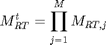
The reflectivity of the matrices for each is calculates as follow:
function R = calcInhomogeneousReflectivity(obj,strains,strainVectors,RTM) % if no all-ref-trans matrices are given, we have to calculate % them first. if nargin < 4 RTM = obj.getAllRefTransMatrices(strainVectors); end % initialize N = obj.S.getNumberOfUnitCells(); UCIndices = obj.S.getUnitCellVectors(); RT = repmat(eye(2,2),[1 1 length(obj.qz)]); % traverse all unitCells in the sample structure for i = 1:N % Find the ref-trans matrix in the RTM cell array for the % current unitCell ID and applied strain. Use the % _knnsearch_ funtion to find the nearest strain value. UCIndex = UCIndices(i); strainIndex = finderb(strains(i),strainVectors{UCIndex}); temp = RTM{UCIndex}{strainIndex}; if ~isempty(temp) RT = mtimesx(RT,temp); else error('not found'); end end%for % add the reflectivity of a substrate of available if ~isempty(obj.S.substrate) RT = mtimesx(RT,obj.homogeneousRefTransMatrix(obj.S.substrate)); end % calculate reflectivity from ref-trans matrix R = obj.getReflectivityFromMatrix(RT); end%function
getAllRefTransMatrices
Returns a cell array of all reflection-transmission matrices for each unique unit cell in the sample structure for a given set of applied strains to each unique unit cell given by the strainVectors input. If this data was saved on disk before, it is loaded, otherwise it is calculated.
function RTM = getAllRefTransMatrices(obj,strainVectors) % create a hash of all simulation parameters filename = ['allRefTransMatrices_' obj.getHash(strainVectors) '.mat']; fullfilename = fullfile(obj.cacheDir, filename); % check if we find some corresponding data in the cache dir if exist(obj.cacheDir,'dir') % we are on local disc if exist(fullfilename,'file') && ~obj.forceRecalc % found something so load it load(fullfilename); obj.dispMessage(['_refTransMatrices_ loaded from file ' fullfilename]); else % nothing found so calculate it and save it RTM = obj.calcAllRefTransMatrices(strainVectors); save(fullfilename, 'RTM','-v7.3'); obj.dispMessage(['_refTransMatrices_ saved to file ' fullfilename]); end else % we have a distributed job if exist(filename,'file') && ~obj.forceRecalc % found something so load it load(filename); else % nothing found so calculate but we don't save on a % worker RTM = obj.calcAllRefTransMatrices(strainVectors); end end end%function
calcAllRefTransMatrices
Calculates a cell array of all reflection-transmission matrices for each unique unit cell in the sample structure for a given set of applied strains to each unique unit cell given by the strainVectors input.
function RTM = calcAllRefTransMatrices(obj,strainVectors) tic obj.dispMessage('Caclulate all _refTransMatricies_ ...'); %initalize UCs = obj.S.getUniqueUnitCells(); % if no strainVecorts are given we just do it for no strain (1) if nargin < 2 strainVectors = cell(length(UCs(:,1)),1); strainVectors(:,1) = {1}; end % check if there are strains for each unique unitCell if length(strainVectors) ~= length(UCs(:,1)) error('The Strain Cell Array has not the same size as Number of Unique Unit Cells'); end % initialize refTransMatrices RTM = {}; % traverse all unique unitCells for i = 1:length(UCs(:,1)) RTM{i} = {}; end%for % traverse all unique unitCells for i = 1:length(UCs(:,1)) temp = cell(length(strainVectors{i}),1); UC = UCs{i,2}; % traverse all strains in the strainVector for this unique % unitCell parfor j = 1:length(strainVectors{i}) temp{j} = obj.getUCRefTransMatrix(UC,strainVectors{i}(j)); end%parfor RTM{i} = temp; end%for obj.dispMessage('Elapsed time for _refTransMatricies_:',toc); end%funtion
unit cell methods
These methods are unit cell specific.
getUCRefTransMatrix
Returns the reflection-transmission matrix of a unit cell:
where and are the atomic reflection-transmission matrix and the phase matrix for the atomic distances, respectively.
function RTM = getUCRefTransMatrix(obj,UC,strain) if nargin < 3 strain = 0; % set the defalut strain to 0 end N = length(obj.qz); % number of q_z M = UC.numAtoms; % number of atoms % initialize matrices RTM = repmat(eye(2,2),[1 1 N]); % traverse all atoms of the unit cell for j = 1:M % Calculate the relative distance between the atoms. % the raltive position is calculated by the function handle % stored in the atoms cell array as 3rd element. This % function returns a relative postion dependent on the % applied strain. if j == M % its the last atom delDist = (strain+1)-UC.atoms{j,2}(strain); else delDist = UC.atoms{j+1,2}(strain)... - UC.atoms{j,2}(strain); end % get the reflection-transmission matrix and phase matrix % from all atoms in the unit cell and multiply them % together RTM = mtimesx(RTM,... obj.getAtomRefTransMatrix(UC.atoms{j,1},UC.area,UC.debWalFac)); RTM = mtimesx(RTM,... obj.getAtomPhaseMatrix(delDist*UC.cAxis)); end%for end%function
atomic methods
These methods are atom specific.
getAtomRefTransMatrix
Returns the reflection-transmission matrix of an atom from dynamic XRD theory:
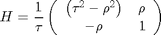
function H = getAtomRefTransMatrix(obj,atom,area,dbf) % check for already calculated data hash = dataHash({obj.E obj.qz obj.pol area dbf}); index = find(strcmp(obj.lastAtomRefTransMatrices,atom.ID)); if ~isempty(index) && strcmp(hash,obj.lastAtomRefTransMatrices{index,2}) % These are the same X-ray parameters as last time so we % can use the same matrix again for this atom H = obj.lastAtomRefTransMatrices{index,3}; else % These are new parameters so we have to calculate. % Get the reflection-transmission-factors rho = obj.getAtomReflectionFactor(atom,area,dbf); tau = obj.getAtomTransmissionFactor(atom,area,dbf); % calculate the reflection-transmission matrix H = ones(2,2,length(obj.qz)); H(1,1,:) = (1 ./ tau) .* (tau.^2 - rho.^2); H(1,2,:) = (1 ./ tau) .* (rho); H(2,1,:) = (1 ./ tau) .* (-rho); H(2,2,:) = (1 ./ tau); % remember this matrix for next use with the same % parameters for this atom if ~isempty(index) obj.lastAtomRefTransMatrices(index,:) = {atom.ID, hash, H}; else obj.lastAtomRefTransMatrices(end+1,:) = {atom.ID, hash, H}; end end end%function
getReflectionFactor
Returns the reflection factor from dynamic XRD theory:
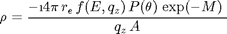
- 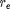 is the electron radius
- 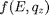 is the energy and angle dispersive atomic form factor
- 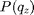 is the polarization factor
- 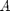 is the area in 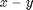 plane on which the atom is placed
- 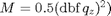 where 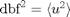 is the average thermal vibration of the atoms - Debye-Waller factor
function rho = getAtomReflectionFactor(obj,atom,area,dbf) rho = (-4i *pi * constants.r_e... * atom.getCMAtomicFormFactor(obj.E,obj.qz) ... .* obj.getPolarizationFactor() .* exp(-0.5*(dbf*obj.qz).^2))... ./ (obj.qz*area); end%function
getTransmissionFactor
Returns the transmission factor from dynamic XRD theory:
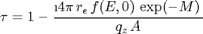
- is the electron radius
- 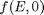 is the energy dispersive atomic form factor (no angle correction)
- is the area in plane on which the atom is placed
- where is the average thermal vibration of the atoms - Debye-Waller factor
function tau = getAtomTransmissionFactor(obj,atom,area,dbf) tau = 1 - (4i *pi * constants.r_e... * atom.getAtomicFormFactor(obj.E)... .* exp(-0.5*(dbf*obj.qz).^2)) ./(obj.qz*area); end%function
getAtomPhaseMatrix
Returns the phase matrix from dynamic XRD theory:

function L = getAtomPhaseMatrix(obj,distance) phi = obj.getAtomPhaseFactor(distance); L = zeros(2,2,length(obj.qz)); L(1,1,:) = exp(1i*phi); L(2,2,:) = exp(-1i*phi); end%function
getAtomPhaseFactor
Returns the phase factor 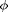 for a distance 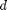 from dynamic XRD theory:
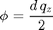
function phi = getAtomPhaseFactor(obj,distance) phi = distance * obj.qz/2; end%function
end%methods methods (Static = true)
getReflectivityFromMatrix
Returns the physical reflectivity from an 2x2 matrix of transmission and reflectifity factors:
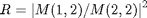
function R = getReflectivityFromMatrix(M) R = zeros(size(M,3),1); R(:) = abs(M(1,2,:)./M(2,2,:)).^2; end%functions
end%methods
end%classdef
References
- J. Als-Nielson, & D. McMorrow (2001). Elements of Modern X-Ray Physics. New York: John Wiley & Sons, Ltd. doi:10.1002/9781119998365